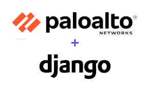

Automating Palo Alto Networks firewalls¶

I spent a few Twitch sessions talking about the automation of Palo Alto Networks firewalls. We used approaches different from the ones we used with Cisco devices. At first, we developed a few simple Ansible playbooks. In the last sessions, we developed a very small Django web application to enable and disable network flows programmatically.
Ansible with Palo Alto Networks Firewalls¶
The Palo Alto Networks module for Ansible has some prerequisites:
Then we install the PAN-OS Ansible collection:
The interpreter_python option in the ansible.cfg file must point to the interpreter that has the PAN-OS libraries installed. This is important when we use a virtual environment.
The firewall credentials are not passed in the standard way: we must pass a specific dictionary to each task. We populated the dictionary from the Ansible parameters as follows:
- set_fact:
provider:
ip_address: "{{ ansible_host }}"
password: "{{ ansible_password }}"
username: "{{ ansible_user }}"
Getting Facts¶
The Palo Alto Networks module does not use the gather_facts parameter. It defines a custom task to retrieve the facts:
Sending Operational Commands¶
The panos_op module sends commands to the firewall. The module translates the given command into XML and uses the XML API. Some commands can fail, so the best way is to specify the commands with the XML syntax. The following command fails:
The following command works:
The API browser, available on the firewall at the /api URL, helps to find the right request. The API above is available at /php/rest/browse.php/op::show::arp.
We used panos_op to get the system info and the ARP table.
Because the operational commands are sent in XML format, the Ansible module converts the output to JSON automatically. Remember that XML can be converted to JSON/YAML and back, but XML attributes are usually lost in the process.
Sending Configuration Commands¶
We wrote the fourth playbook to test the configuration commands. The Ansible module offers many configuration commands, but we limited ourselves to configuring some parameters of the management interface.
We also discussed how to "zero-touch provision" a Palo Alto Networks firewall. We did not test the scenario, but we agreed that we could write a working playbook.
Configuration Templating¶
Configuration commands can manage many features of a firewall, but we tested a different approach: configuration templating. Because Palo Alto Networks firewalls have the commit feature, in my opinion this is the best approach.
The idea is:
- Prepare a configuration template (Jinja2).
- Build the firewall configuration from the template, using an external configuration file (the model).
- Upload the firewall configuration file and enable it.
The fifth playbook implements this approach.
Pros and cons of this approach:
- The entire firewall configuration can be stored in a CMDB file (pro).
- The firewall configuration is always consistent (pro).
- We can configure almost everything (pro).
- We do not need to run checks before inserting a specific configuration in a running firewall (pro).
- We need to spend a lot of time designing the firewall model (con).
Programming the Firewall Using External Feeds¶
Many firewalls can read external feeds: we can use their content as a source or destination in access lists. This approach is perfect to allow temporary access. In the last session we created a small web application with Django.
The application provides feeds that contain IP addresses. Each IP address has an expiration date, and once it expires it is removed from the feed.

Installing Django¶
We install Django in a Python environment (see S01E01):
Creating the Django Application¶
We create the first Django project and an application within it:
By default, the database is an SQLite file stored under the Django root folder. We must load the app in the settings.py file stored in the feedapp folder:
We create the admin user:
Modeling¶
In the simplest version of our application, we expect that:
- An admin user adds one or more EDL objects (lists of IP addresses).
- An admin user adds one or more IP addresses to an EDL object.
- An expiration time can optionally be set on each IP address.
- Unexpired IP addresses are available in a text list under a specific, non-guessable URL.
In other words, we have two objects:
- EDL with ID, name and URL.
- IP with name, expiration date (optional) and associated EDL.
When the model is complete, we update the migration scripts and upgrade the database schema:
Admin Page¶
By default, Django provides an admin page for each model. We enable it by adding the following lines to the admin.py file:
We open the Django application at the /admin URL and add one EDL with at least one IP address.
Printing EDLs¶
The view.py file serves custom HTTP requests. We need to print the content of each EDL when a GET request asks for the EDL ID (slug). The URL is defined in the rrapp/urls.py file.
All the IP addresses linked to a specific EDL are printed in text format if their expiration date is in the future.
Starting the Server¶
In the settings.py file, we can configure Django to serve any client. This is an insecure configuration. We add * to ALLOWED_HOSTS:
We start the application:
The Django application is now reachable. We use the /admin URL and log in with the superuser credentials created before.
Using the EDL from a PANW Firewall¶
Once an EDL is populated, we can use it as a source or destination in ACLs.
We can debug an EDL with the following commands:
admin@fw> request system external-list stats type ip name EDL1
admin@fw> request system external-list show type ip name EDL1
admin@fw> request system external-list refresh type ip name EDL1
One last note: when an IP address is removed from an EDL, the session is not cleared. In other words, the established sessions are maintained and the new sessions are dropped.
A script should clear the sessions related to the expired IP addresses:
Also note that the firewall usually probes the URLs every 5 minutes, so the clear command should run 5 minutes after the expiration date. We should extend the web application to track the requests and whether the sessions have been cleared.